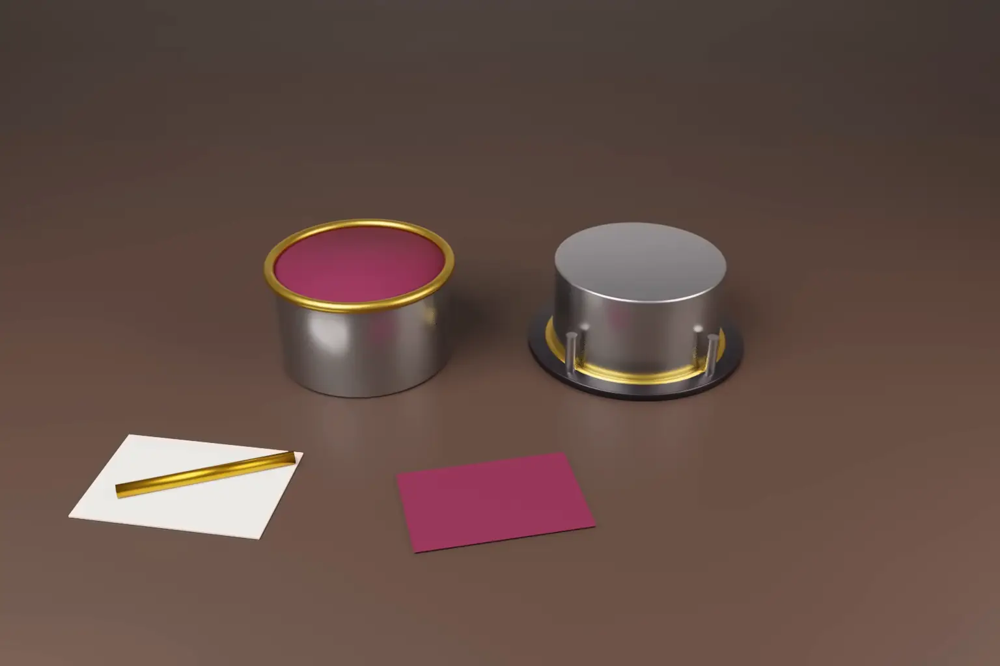

Is a claimed parameter range indefinite if the patent does not say how to measure it? It can be. On 17 November 2026 the Federal Circuit affirmed that three claims of a breathable membrane patent were invalid. The specification allowed several test methods that gave different answers.
The case is Cocona, Inc. v VF Outdoor, LLC, Nos. 2025-1458 and 2025-1462, decided by Judges Lourie, Stoll and Stark, with Judge Stark writing. It is a short opinion with a long reach. Any claim that defines an invention by a number, such as viscosity, particle size, porosity or dissolution rate, carries the same risk.
- The claims of US Patent 8,945,287 recited a moisture vapor transmission rate (MVTR) of about 600 to about 11000 g/m2/day. They did not say how to measure it.
- The specification described upright cup, inverted cup and Mocon methods. The same sample fell inside the range on one method and outside it on another.
- The court applied the Nautilus test of reasonable certainty and affirmed the district court's finding of indefiniteness under 35 U.S.C. § 112.
- The court said it was not holding that several available test methods make a claim indefinite per se. The result turned on this patent's intrinsic record.
- India and the EPO apply the same logic through clarity and sufficiency rules. The fix is the same everywhere: name one test method and its conditions.
What the patent claimed
Cocona's patent covers a waterproof, breathable membrane containing active particles. Claim 1 ends with a membrane having "a moisture vapor transmission rate from about 600 g/m2/day to about 11000 g/m2/day". Claim 38 depends from claim 27, which recites the same range. Claim 39 depends from claim 38. The claims do not name a test method, a temperature or a humidity.
The specification said MVTR "may be measured" by a cup method at 40 °C and 20 percent relative humidity. It also referred to ASTM E96-94. It described an upright cup method for low moisture contact and an inverted cup method for high moisture contact. It did not say how to tell low contact from high contact. The parties also disputed whether a Mocon instrument method was a separate option.
Why the claims failed
The patent's own data showed the problem. A control sample in Figure 2 measured 470 g/m2/day by the upright method, outside the range. By the inverted method it measured 6,356 g/m2/day, inside the range. A sample in the incorporated provisional application showed the reverse pattern.
The court held that the patent "lacks the 'required guidance' as to how to measure MVTR" (slip opinion, page 7). It relied on Teva v Sandoz, where "molecular weight" was indefinite because the patent did not say which of three measures to use. It also relied on Dow Chemical v Nova. There, the method chosen "could affect whether or not a given product infringes the claims" (page 12).
Cocona argued that the district court wrongly demanded mandatory language. The Federal Circuit disagreed. It found no clear error in the district court crediting the defendant's expert over Cocona's expert. The district court had called his testimony "quintessentially conclusory" (page 13).
What the ruling does not decide
- It does not hold that a claim is indefinite whenever more than one test exists. The court said so expressly (page 9).
- It does not disturb cases where the record points to one method. The court distinguished Ethicon v Covidien and Presidio v American Technical Ceramics on that basis.
- It does not address infringement. The appeal concerned only indefiniteness.
How India and Europe compare
India. Section 10(4)(a) of the Patents Act, 1970 requires the complete specification to "fully and particularly describe the invention and its operation or use". Section 10(5) requires claims that "shall be clear and succinct and shall be fairly based on the matter disclosed in the specification". A claim whose scope "is not sufficiently and clearly defined" can be revoked under section 64(1)(i). A clarity objection to a bare numeric range is far easier to answer when the method is already in the specification.
European Patent Office. The Guidelines for Examination, Part F, Chapter IV, section 4.11, set out the Article 84 requirements for parameters. The method for measuring a parameter, or a reference to it, "must appear completely in the claim itself". A long method may be imported by referring to the description under Rule 43(6). There are two exceptions. One is that the method is common general knowledge. The other is that all known methods give the same result within measurement accuracy. Cocona's facts would likely fail both, because the known methods gave different results.
| Office or court | Legal basis | Where the test method must appear |
|---|---|---|
| United States | 35 U.S.C. § 112(b) (§ 112 ¶ 2 for older patents), Nautilus reasonable certainty | Where methods give different results, the intrinsic record must show which one to use |
| India | Patents Act, ss. 10(4), 10(5) and 64(1)(i) | Specification must describe it, and claims must be clear |
| European Patent Office | Article 84 EPC, Guidelines F IV 4.11 | In the claim, or by reference to the description under Rule 43(6) |
Practical steps for drafting teams
- Name one method. State the standard, its edition, and the conditions, such as temperature, humidity, sample preparation and instrument.
- Use mandatory words. Write "is measured by" rather than "may be measured by" for the method that defines the claim.
- Check the examples. Make sure every example and figure reports values under the same method that the claims use.
- Watch incorporated documents. A provisional or priority document with data under a different method can create the same uncertainty.
- Audit pending US cases. Where a claim recites a parameter range, consider amending to tie it to the method the specification supports.
For the wider claim drafting picture, see our notes on inoperable claims in Satius v Samsung and on international patent support.
Frequently asked questions
Can a numeric range in a patent claim be indefinite?
Yes. In Cocona v VF Outdoor (Fed. Cir., 17 November 2026), an MVTR range was indefinite because the patent allowed several test methods that gave different results for the same sample.
Must the test method appear in the claim itself?
At the EPO, the method or a reference to it must normally appear in the claim. In the US, claims are read in light of the specification. A method set out only in the description can be enough if the patent clearly points to it, as in Ethicon and Presidio. Indian practice is less settled, so naming the method in the claim is the safer course.
Does having two possible test methods always make a claim indefinite?
No. The Federal Circuit said its holding was not a per se rule. It depends on whether the patent tells the skilled reader which method to use.